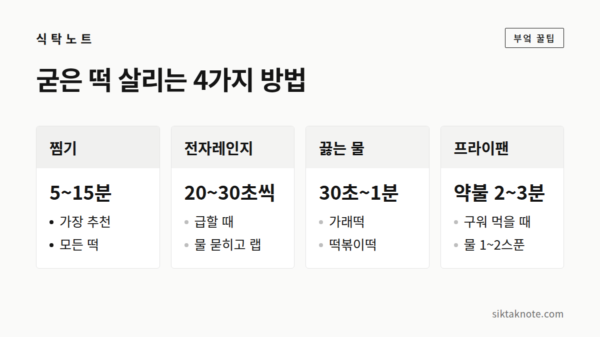

딱딱하게 굳은 떡, 갓 만든 것처럼 말랑하게 살리는 법

3줄 요약
- 가장 확실한 방법은 찜기에 5~10분 찌는 것입니다.
- 급할 땐 물을 살짝 묻혀 랩을 씌우고 전자레인지에 20~30초씩 나눠 돌리세요.
- 다음부터는 냉장고 말고 냉동실에 넣어야 덜 굳습니다.
떡은 왜 이렇게 빨리 굳을까
떡이 굳는 건 상해서가 아니라 "전분의 노화" 때문입니다. 쌀이나 감자 전분은 물과 열을 만나 말랑하게 풀어지는데, 식으면서 다시 촘촘하게 뭉쳐 딱딱해집니다. 이 현상은 0~5℃, 바로 냉장고 온도에서 가장 빨리 일어납니다. 떡을 냉장고에 넣으면 하룻밤 만에 돌덩이가 되는 이유입니다.
반대로 말하면, 다시 열과 수분을 주면 상당 부분 되돌릴 수 있습니다.

방법 1. 찜기 (가장 추천)
- 찜기 물을 먼저 끓입니다.
- 김이 오르면 젖은 면포나 종이호일을 깔고 떡을 올립니다.
- 냉장 떡은 5분, 냉동 떡은 10~15분 찝니다.
수분이 골고루 들어가서 갓 만든 식감에 가장 가깝습니다. 인절미처럼 고물이 묻은 떡은 고물이 젖을 수 있으니 짧게 쪄 주세요.

방법 2. 전자레인지 (급할 때)
- 떡 표면에 물을 손으로 살짝 묻힙니다.
- 접시에 담고 랩을 씌우거나 젖은 키친타월을 덮습니다.
- 20~30초씩 끊어서 돌리고, 눌러보며 상태를 확인합니다.
한 번에 오래 돌리면 겉은 녹아 늘어지고 식으면 오히려 더 딱딱해집니다. 짧게 여러 번이 핵심입니다. 데운 떡은 바로 드세요.
방법 3. 끓는 물 (가래떡·떡볶이떡)
가래떡이나 떡볶이떡은 끓는 물에 30초~1분 데치면 금방 풀립니다. 떡국이나 떡볶이에 바로 쓸 거라면 이 방법이 제일 간단합니다.
방법 4. 프라이팬 (구워 먹을 때)
팬에 기름을 아주 조금 두르고 떡을 올린 뒤, 물 한두 스푼을 넣고 뚜껑을 덮어 약불로 2~3분 둡니다. 속은 증기로 말랑해지고 겉은 노릇해집니다. 꿀이나 조청을 곁들이면 간식으로 좋습니다.

다음부터 덜 굳게 보관하려면
- 당일에 먹을 떡: 실온에 두되 랩이나 밀폐용기로 마르지 않게 합니다.
- 하루 이상 둘 떡: 냉장고가 아니라 냉동실로 바로 보냅니다. 얼어 있는 동안에는 노화가 거의 멈춥니다.
- 냉동 요령: 한 번 먹을 만큼씩 랩으로 싸서 지퍼백에 넣습니다. 먹을 때 찜기에 바로 찌면 됩니다.
이럴 땐 드시지 마세요
쉰내가 나거나, 표면이 끈적이며 실처럼 늘어지거나, 곰팡이가 보이면 굳은 게 아니라 상한 것입니다. 곰팡이는 보이는 부분만 떼어내도 안쪽까지 퍼져 있을 수 있으니 통째로 버리는 게 안전합니다.
마무리
굳은 떡은 "열 + 수분"만 기억하면 됩니다. 시간이 있으면 찜기, 없으면 물 묻혀 전자레인지. 그리고 남은 떡은 냉장고 말고 냉동실로.